Document control
| Title | Veoveo UAF 1.3 / SysML 1.6 Reference Architecture |
| Architecture identity | VV-MODEL-001 |
| Purpose | Generic reference architecture for formal client review and model exchange. |
| Scope | All 44 Rust workspace packages, the React console, Python SDK and server template, internal Python/C++ executors, deployment and verification components, and external runtime resources in the canonical architecture. |
| Exclusions | Source-code modules within a component, transient permission/init jobs, test fixtures, customer-specific configuration, personnel structure, facilities, and classified mission content. |
| Handling | Reference baseline with no client-specific data. Apply contract, export-control, CUI, distribution, and classification markings before client release. |
| Authority | The repository implementation and executable verification remain product evidence. The model organizes and traces that evidence; it does not replace tests. |
Architecture method and conformance posture
UAF 1.3 governs the enterprise and mission architecture. SysML 1.6 supplies detailed software blocks, requirement semantics, connectivity, and lifecycle behavior beneath it. Stable identifiers preserve traceability across diagrams, catalogs, XMI, repository evidence, and future client overlays.
Trace rule
Requirement -> Capability -> Operational Activity -> Service -> Software Resource -> Actual Resource -> Verification Evidence
Baseline invariants
SurrealDB is the sole platform coordination authority. Provider completion is webhook-only. The gateway preserves the complete MCP surface where it fits. Artifacts, recordings, tasks, agents, policy decisions, and audit evidence retain canonical identities. Helm instantiates the same service graph in local k3d and fielded Kubernetes.
Selected formal layers
| Layer | Question answered | Veoveo model elements |
|---|---|---|
| Strategic | Which enterprise abilities and outcomes matter? | VV-CAP-* |
| Operational | Which logical activities and mission threads produce the outcome? | VV-OPA-* |
| Services | Which implementation-independent offers support the activities? | VV-SVC-* |
| Resources | Which software, interfaces, data, and runtimes realize the services? | VV-CMP-* and VV-IF-* |
| Actual Resources | Which connected or offline fielded configuration is present? | VV-AR-* |
| Requirements and evidence | Which claims constrain the architecture and where are they verified? | VV-REQ-* and repository evidence |
VV-VIEW-00
Architecture view map
Architecture Management / all-domain navigation
Shows how strategic, operational, service, resource, actual-resource, security, standards, and evidence concerns remain one traceable model.
Open vector view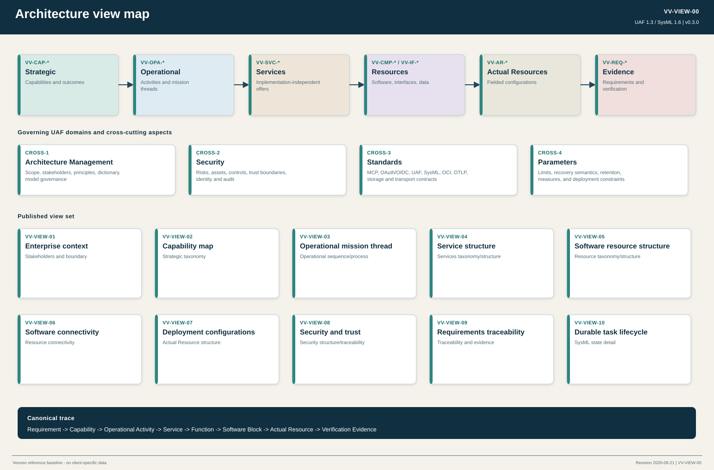
VV-VIEW-01
Enterprise context
Architecture Management Structure
Defines the installation boundary, external performers, organization-owned dependencies, and principal exchanges.
Open vector view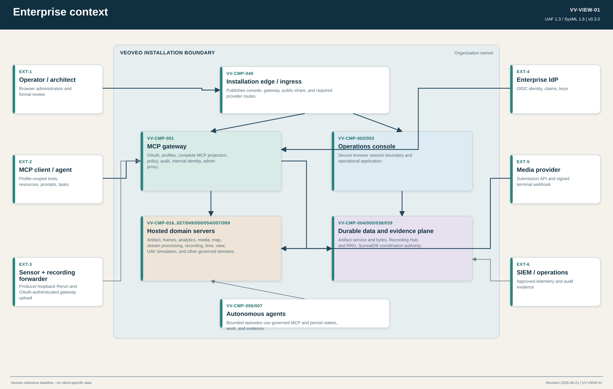
VV-VIEW-02
Capability map
Strategic Taxonomy and Traceability
Defines the abilities Veoveo contributes to logistics, defense, analytics, autonomy, governance, and deployment.
Open vector view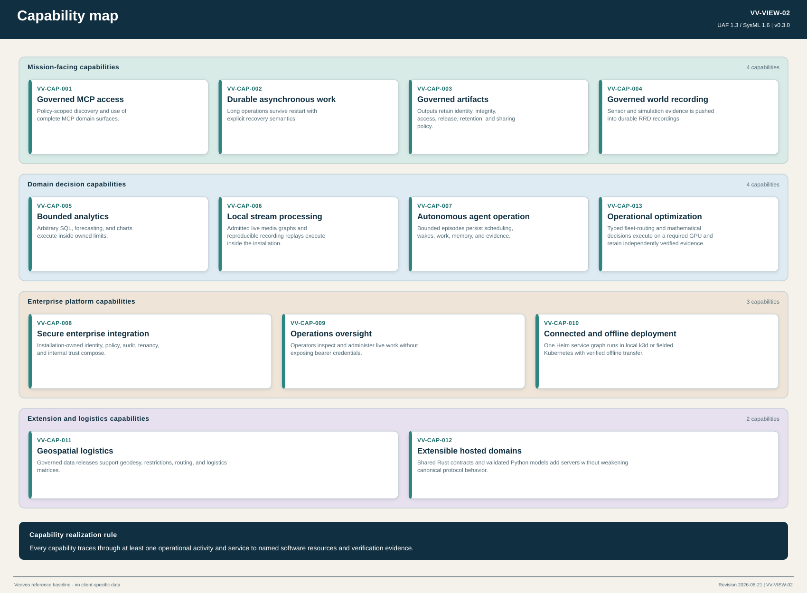
VV-VIEW-03
Operational mission thread
Operational Sequences and Processes
Follows a representative governed observe-analyze-decide-act thread and the evidence created along it.
Open vector view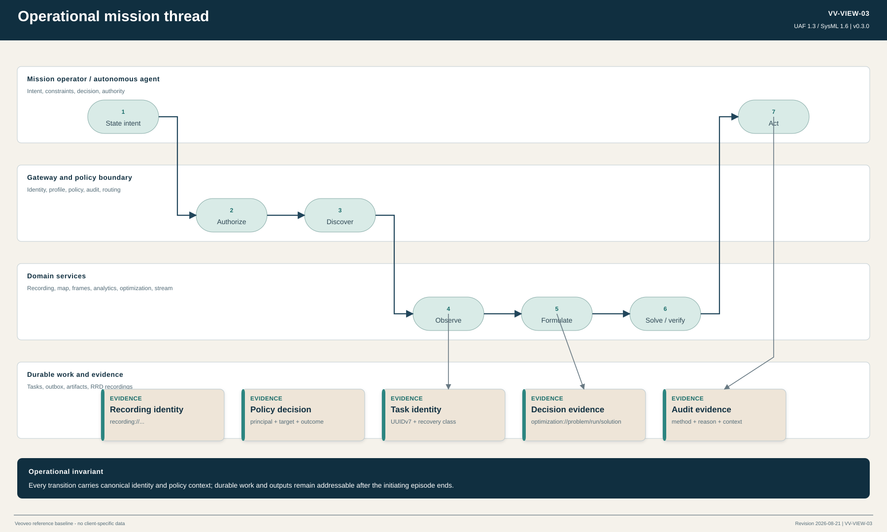
VV-VIEW-04
Service structure
Services Taxonomy and Structure
Separates implementation-independent services from their realizing software resources.
Open vector view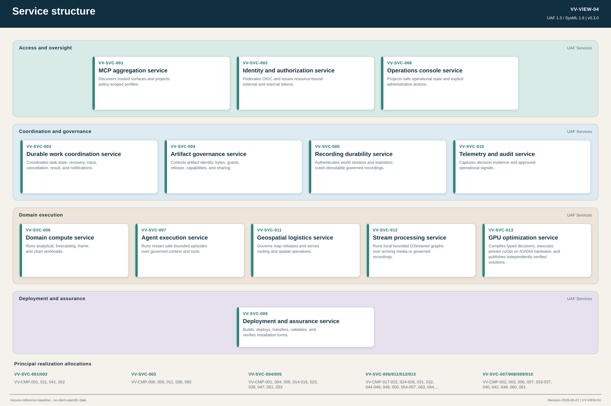
VV-VIEW-05
Software resource structure
Resources Taxonomy and Structure / SysML BDD
Enumerates all 68 scoped first-party, packaged, and external software resources.
Open vector view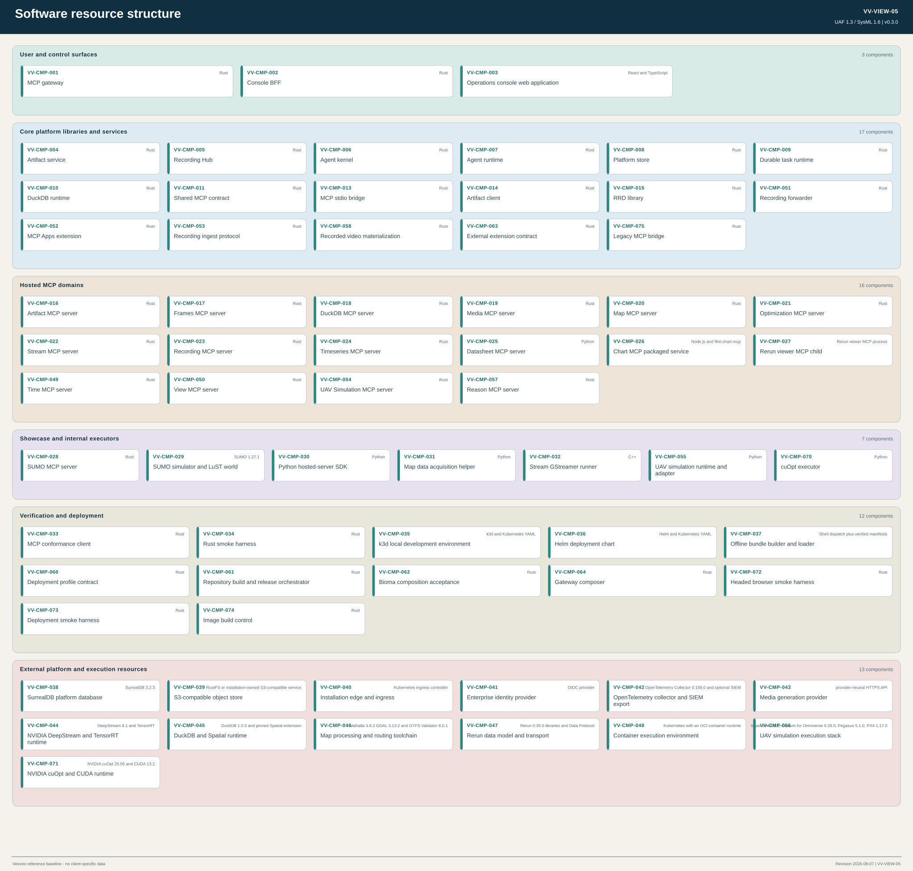
VV-VIEW-06
Software resource connectivity
Resources Connectivity / SysML IBD
Shows runtime protocols, trust transitions, private authorities, and specialized execution boundaries.
Open vector view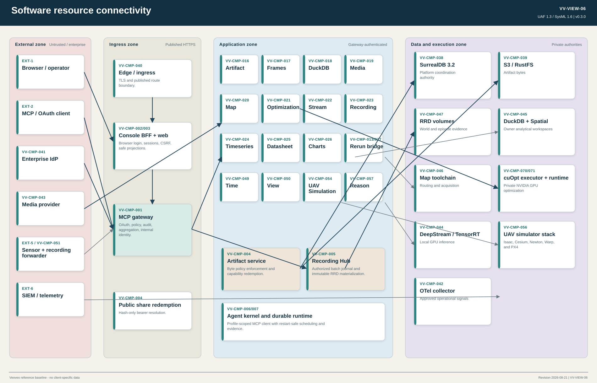
VV-VIEW-07
Deployment configurations
Actual Resources Structure
Compares local k3d with connected and offline Kubernetes configurations that share one Helm service graph.
Open vector view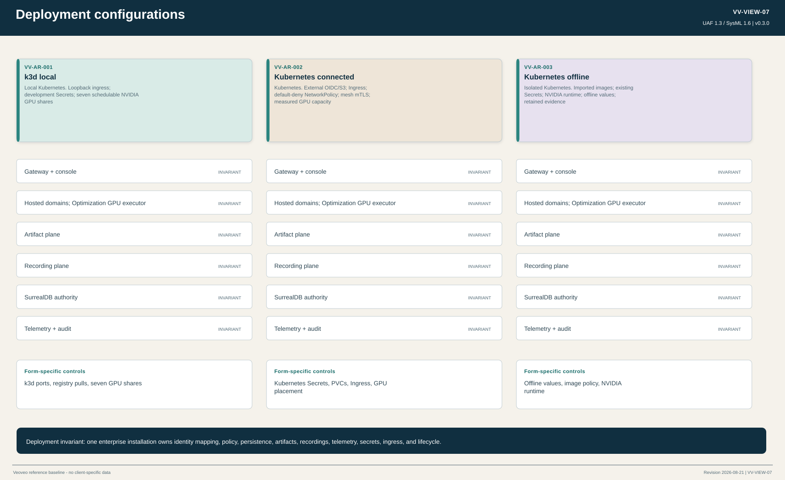
VV-VIEW-08
Security and trust
Security Structure and Traceability
Locates identity transitions, trust zones, protected assets, and the controls that preserve policy context.
Open vector view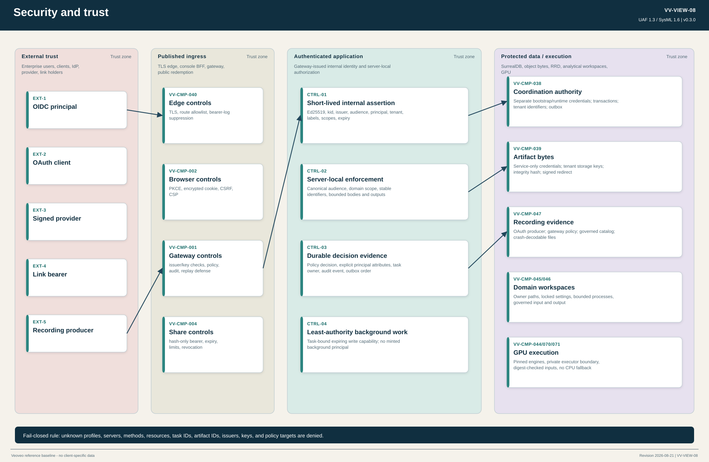
VV-VIEW-09
Requirements traceability
Traceability / SysML Requirements
Connects formal requirements to UAF capabilities, operational activities, services, resources, and repository evidence.
Open vector view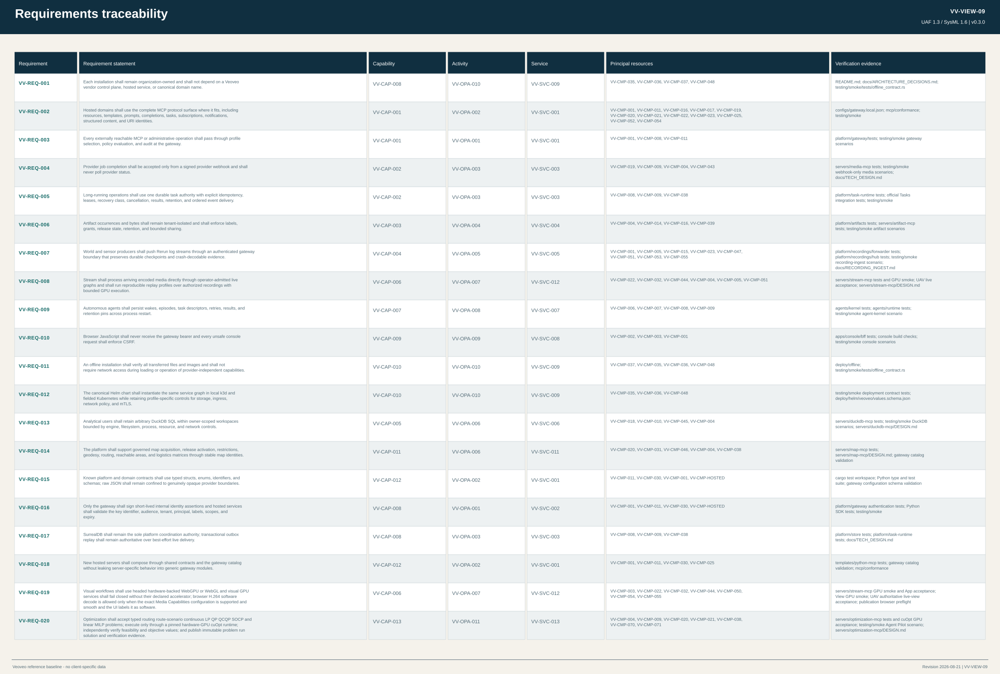
VV-VIEW-10
Durable task lifecycle
Resources States / SysML State Machine
Defines the durable state transitions and the webhook-only provider completion branch.
Open vector view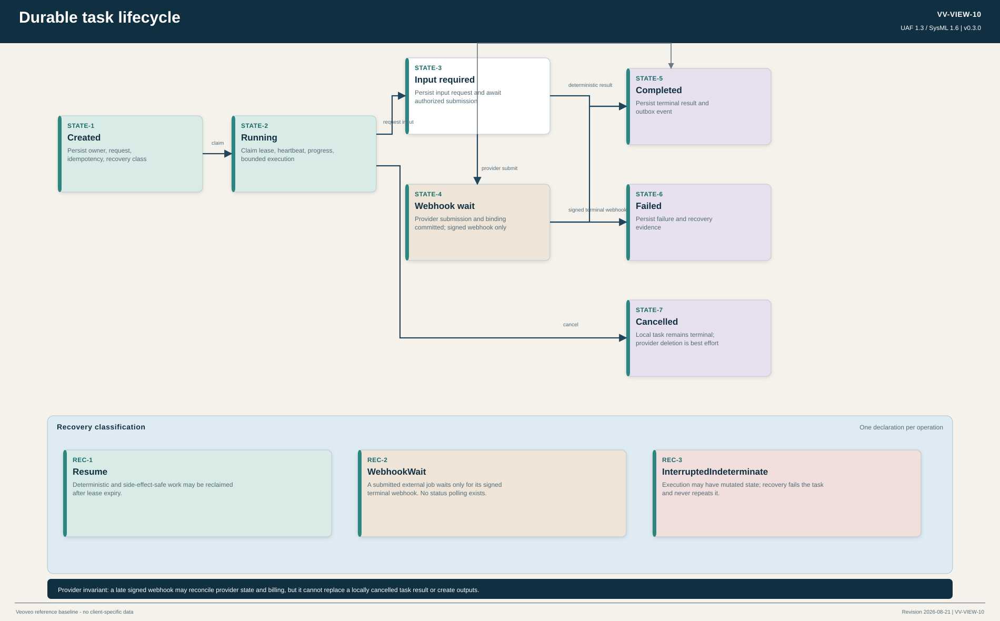
Software component catalog
The catalog includes every buildable first-party component and every external runtime that participates in the stated architecture. Deployment aliases and external operational actors appear in the interface model but are not counted as software resources.
| ID | Component | Category | Implementation | Deployment | Responsibility | Authority |
|---|---|---|---|---|---|---|
| VV-CMP-001 | MCP gateway | Core deployable | Rust | one or more replicas | Aggregates policy-scoped MCP profiles; terminates OAuth; evaluates policy; records audit; issues short-lived internal identity; proxies declared hosted-server administration projections and governed artifact downloads. | SurrealDB control revisions and security records |
| VV-CMP-002 | Console BFF | Core deployable | Rust | one or more replicas | Owns the browser security boundary, PKCE login, encrypted HttpOnly sessions, CSRF enforcement, installation projections, and explicit administrative workflows. | Encrypted browser session cookie only |
| VV-CMP-003 | Operations console web application | Core application | React and TypeScript | static assets served by Console BFF | Presents health, tasks, artifacts, agents, recordings, MCP topology, policy, audit, and installation state without receiving gateway bearer tokens. | No authoritative state |
| VV-CMP-004 | Artifact service | Core deployable | Rust | one or more replicas | Enforces tenant, label, grant, release, retention, share-link, and write-capability policy for governed artifact occurrences and bytes. | SurrealDB artifact identity and authorization records; object store bytes |
| VV-CMP-005 | Recording Hub | Core deployable | Rust | single private spooler per recording volume | Accepts gateway-authorized recording batches, journals small durable RRD parts, and publishes keyframe-aligned immutable archive shards through one footer-writing object-store compaction pass. | Internal durable parts; immutable RRD archive shards; SurrealDB recording catalog |
| VV-CMP-006 | Agent kernel | Core agent component | Rust | operator-launched agent process | Runs bounded autonomous episodes with MCP tools, durable input requests, memory, replay, budgets, recording, and detach/resume behavior. | SurrealDB-backed runtime descriptors; RRD episode evidence |
| VV-CMP-007 | Agent runtime | Core library | Rust | linked into agent processes | Persists agents, wakes, episodes, watcher leases, retry schedules, task descriptors, results, and retention pins across process restart. | SurrealDB agent records and outbox |
| VV-CMP-008 | Platform store | Core library | Rust | linked into platform services | Owns persistence record types, ordered migrations, stable identities, transactional outbox, changefeed replay, and platform-store access. | SurrealDB 3.2.4 |
| VV-CMP-009 | Durable task runtime | Core library | Rust | linked into durable workers | Owns UUIDv7 task creation, idempotency, leases, claims, progress, durable input, cancellation, terminal results, retention, recovery, and outbox transitions. | SurrealDB task and provider-job records |
| VV-CMP-010 | DuckDB runtime | Core library | Rust | linked into analytical components | Provides owner-scoped DuckDB workspace construction and locked analytical execution primitives. | Owner-scoped DuckDB workspace files |
| VV-CMP-011 | Shared MCP contract | Core library | Rust | linked into gateway clients and servers | Defines cross-service Rust models and domain identifiers for gateway configuration, policy vocabulary, artifacts, coordinates, storage, tasks, subscriptions, usage, and URI conventions. | No authoritative state |
| VV-CMP-013 | MCP stdio bridge | Core deployable | Rust | one bridge process for the Rerun viewer server | Projects a child stdio MCP server onto bounded Streamable HTTP while preserving the registered gateway identity. | No authoritative state |
| VV-CMP-014 | Artifact client | Core library | Rust | linked into domain servers | Provides the native Rust client for artifact metadata, capabilities, upload, download, grants, release, and sharing operations. | Artifact service only |
| VV-CMP-015 | RRD library | Core library | Rust | linked into recording query and agent components | Provides Rerun/RRD read, merge, query, and recording utility behavior shared by the platform. | RRD segment files |
| VV-CMP-016 | Artifact MCP server | Hosted MCP server | Rust | replicated hosted service | Exposes governed artifact discovery, metadata, grants, release states, share links, subscriptions, prompts, and completions through canonical artifact URIs. | Artifact service and platform store |
| VV-CMP-017 | Frames MCP server | Hosted MCP server | Rust | replicated hosted service | Converts WGS84, ECEF, ENU, and NED frames; derives local frames; persists coordinate operations; and executes durable batches. | SurrealDB frame and coordinate-operation records |
| VV-CMP-018 | DuckDB MCP server | Hosted MCP server | Rust | single persistent owner-workspace service | Executes arbitrary query, execute, ingest, and export SQL inside bounded owner-scoped workspaces with governed inputs and outputs. | Owner-scoped DuckDB files; SurrealDB task metadata |
| VV-CMP-019 | Media MCP server | Hosted MCP server | Rust | replicated hosted service | Provides provider-neutral media model discovery, schemas, generation tasks, webhook-only provider completion, usage reconciliation, and governed output artifacts. | SurrealDB provider jobs events usage and tasks; artifact plane outputs |
| VV-CMP-020 | Map MCP server | Hosted MCP server | Rust | single persistent map catalog service | Governs map sources and releases; performs geodesy, CRS transformation, location inspection, restrictions, reachable areas, routing, logistics matrices, and immutable cuOpt travel-model publication. | SurrealDB map governance records and operational snapshots; DuckDB catalog; map release files; artifact plane travel models |
| VV-CMP-021 | Optimization MCP server | Hosted MCP server | Rust | control container in one GPU-backed Optimization pod | Owns the typed routing, route-scenario, convex, and MILP contract; compiles controlled models; coordinates durable GPU work; independently verifies solver output; and publishes immutable problem, run, solution, and verification evidence. | SurrealDB task run and usage metadata; digest-verified prepared-problem workspace; artifact plane problem solution and verification outputs |
| VV-CMP-022 | Stream MCP server | Hosted MCP server | Rust | GPU-backed hosted service | Runs operator-admitted GStreamer graphs directly over live encoded media or authorized recording ranges; exposes an MCP App for encoded preview and typed overlays; publishes governed replay results; and may route existing encoded live output to Recording Hub without delaying processing. | Bounded owner-scoped live sessions; SurrealDB replay tasks; artifact plane outputs |
| VV-CMP-023 | Recording MCP server | Hosted MCP server | Rust | replicated read projection with shared recording volume | Applies tenant and label authorization to recording discovery, query, sealing, subscriptions, artifact publication, recording-scoped lazy Redap playback, and bounded-history live following. | Recording Hub archive shards and SurrealDB catalog; reconstructible derived Redap catalogs |
| VV-CMP-024 | Timeseries MCP server | Hosted MCP server | Rust | replicated hosted service | Runs forecasting as durable work and publishes forecast artifacts and RRD output. | SurrealDB task metadata; artifact and RRD outputs |
| VV-CMP-025 | Datasheet MCP server | Hosted MCP server | Python | replicated hosted service and canonical Python template | Demonstrates the Python platform contract through dataset preview, column statistics, task-based profiling, prompts, completions, resources, and notifications. | SurrealDB task metadata; artifact plane reports |
| VV-CMP-026 | Chart MCP packaged service | Hosted MCP server | Node.js and flint-chart-mcp | replicated hosted service | Packages the pinned chart MCP implementation and exposes chart compilation, validation, rendering, view creation, resources, and prompts through the gateway. | Server-owned chart resources |
| VV-CMP-027 | Rerun viewer MCP child | Hosted MCP server | Rerun viewer MCP process | child process behind the stdio bridge | Provides the Rerun viewer's MCP tool surface under the registered rerun server identity. | Rerun viewer process state |
| VV-CMP-028 | SUMO MCP server | Showcase component | Rust | optional showcase service | Owns serialized TraCI access, exposes traffic reads and actuation, runs durable generation and optimization tasks, and pushes world state to a pod-local Recording forwarder. | SUMO live state; SurrealDB tasks; RRD recordings |
| VV-CMP-029 | SUMO simulator and LuST world | Showcase component | SUMO 1.27.1 | optional showcase container | Runs the pinned LuST traffic scenario and exposes private TraCI control to the SUMO MCP owner. | SUMO live simulation state |
| VV-CMP-030 | Python hosted-server SDK | Development component | Python | installed into Python hosted servers | Provides Python models and helpers for identity, pagination, internal authentication, telemetry, artifacts, deployment, task runtime, and official Tasks SDK hooks. | Platform services only |
| VV-CMP-031 | Map data acquisition helper | Internal execution component | Python | subprocess in the Map MCP container | Normalizes authoritative OSM, GTFS, maritime, aviation, and authority datasets into bounded acquisition products. | Map acquisition scratch and release files |
| VV-CMP-032 | Stream GStreamer runner | Internal execution component | C++ | one subprocess per live session or replay task | Executes one admitted GStreamer graph; emits existing encoded access units for the Stream App and optional recording route; and converts native DeepStream metadata into typed detections for perception profiles. | No durable authority |
| VV-CMP-033 | MCP conformance client | Verification component | Rust | test and operator process | Certifies a running hosted server through a typed domain-neutral profile and machine-readable report. | Test evidence only |
| VV-CMP-034 | Rust smoke harness | Verification component | Rust | test and CI process | Owns multi-process and container lifecycle, readiness, timeouts, cleanup, MCP and HTTP calls, assertions, and deployment contract verification. | Test evidence only |
| VV-CMP-035 | k3d local development environment | Deployment component | k3d and Kubernetes YAML | loopback-only local Kubernetes installation | Creates a current K3s cluster with mandatory NVIDIA GPU access, imports local images, and applies profile-owned Helm values without selecting a simulator in generic configuration. | Installation configuration |
| VV-CMP-036 | Helm deployment chart | Deployment component | Helm and Kubernetes YAML | connected or offline Kubernetes installation | Instantiates the service graph with existing secrets, network policy, persistent storage, optional service-mesh mTLS, and ingress controls. | Installation configuration |
| VV-CMP-037 | Offline bundle builder and loader | Deployment component | Shell dispatch plus verified manifests | connected build host and isolated target host | Builds and verifies digest-pinned images, configuration schemas, checksums, SPDX SBOMs, and Helm material without requiring target-network access. | Bundle manifest and retained verification evidence |
| VV-CMP-038 | SurrealDB platform database | External platform runtime | SurrealDB 3.2.4 | required single RocksDB-backed node | Provides the sole durable coordination store for identity, control, policy, tasks, artifacts, recordings, agents, audit, and outbox state. | Canonical platform coordination state |
| VV-CMP-039 | S3-compatible object store | External platform runtime | RustFS or installation-owned S3-compatible service | required object store | Stores governed artifact bytes while the Artifact service owns identity and authorization. | Artifact blob bytes |
| VV-CMP-040 | Installation edge and ingress | External platform runtime | Kubernetes ingress controller | one installation ingress | Terminates installation ingress and exposes only console, gateway, public share redemption, and required provider plumbing routes. | Ingress routing and TLS configuration |
| VV-CMP-041 | Enterprise identity provider | External enterprise service | OIDC provider | installation-owned external dependency | Authenticates users and clients and supplies issuer, JWKS, claims, authorization, and token endpoints to the gateway trust configuration. | Enterprise identity records |
| VV-CMP-042 | OpenTelemetry collector and SIEM export | External platform runtime | OpenTelemetry Collector 0.156.0 and optional SIEM | one or more collectors | Receives logs, traces, metrics, and audit-compatible telemetry and forwards installation-approved signals. | Telemetry pipeline state |
| VV-CMP-043 | Media generation provider | External domain service | provider-neutral HTTPS API | optional connected dependency | Accepts media jobs, delivers signed terminal webhooks, and provides output bytes only to the bounded server-side completion path. | Provider job state |
| VV-CMP-044 | NVIDIA DeepStream and TensorRT runtime | External execution runtime | DeepStream 9.1 and TensorRT | required for Stream perception profiles | Decodes H.264, executes site-approved TensorRT engines, and emits native detection and tracking metadata without starting a Triton service. | Mounted model engines and transient GPU state |
| VV-CMP-045 | DuckDB and Spatial runtime | External execution runtime | DuckDB 1.5.5 and pinned Spatial extension | embedded and container-local | Provides arbitrary analytical SQL, spatial functions, bounded owner workspaces, spill, ingest, and export execution. | Owner-scoped analytical workspace files |
| VV-CMP-046 | Map processing and routing toolchain | External execution runtime | Valhalla 3.8.3 GDAL 3.13.3 and GTFS Validator 8.0.1 | container-local subprocesses | Builds and serves routing tiles, constructs vehicle-specific route and travel matrices, transforms geospatial data, and validates transit datasets under the Map MCP owner. | Map release and routing tile files |
| VV-CMP-047 | Rerun data model and transport | External execution runtime | Rerun 0.36.3 libraries and Data Protocol | embedded producer-loopback and recording-read boundary | Carries world logs into producer-local forwarders, encodes footer-indexed RRD shards, supports lazy Redap chunk reads and bounded live following, and renders recording evidence. | RRD files where persisted |
| VV-CMP-048 | Container execution environment | External platform runtime | Kubernetes with an OCI container runtime | installation substrate | Runs isolated service images, networks, volumes, secrets, resource limits, GPUs, and deployment health controls. | Container and orchestration state |
| VV-CMP-049 | Time MCP server | Hosted MCP server | Rust | single persistent temporal authority service | Resolves civil, military, GNSS, and mission time against versioned authority releases; evaluates calendars and windows; observes clock quality; publishes temporal events; and runs durable timeline work. | SurrealDB temporal catalog and tasks; authority release files |
| VV-CMP-050 | View MCP server | Hosted MCP server | Rust | GPU-backed hosted renderer | Maintains owner-scoped camera views over configured 3D Tiles, bounds network and CPU/GPU residency, renders offscreen with NVIDIA Vulkan, and returns frames with attribution and capture metadata. | Process-local views and caches; SurrealDB task metadata |
| VV-CMP-051 | Recording forwarder | Core deployable | Rust | producer host process or Kubernetes native sidecar | Receives native Rerun traffic on producer loopback, persists a bounded queue, authenticates with OAuth private_key_jwt, resumes from durable checkpoints, and uploads versioned batches through the gateway. | Producer-local queue files until Hub acknowledgement |
| VV-CMP-052 | MCP Apps extension | Core library | Rust | linked into MCP App servers and hosts | Owns the pinned MCP Apps extension constants, typed UI metadata, application resources, capability declarations, tool links, and sandbox-host message helpers. | No authoritative state |
| VV-CMP-053 | Recording ingest protocol | Core library | Rust | linked into gateway Hub forwarder and tests | Owns the canonical versioned protobuf schema, media type, routes, limits, digest validation, stream checkpoints, discovery records, and typed recording ingest errors. | No authoritative state |
| VV-CMP-054 | UAV Simulation MCP server | Hosted MCP server | Rust | pod-local hosted service beside the UAV simulator | Governs simulation sessions, missions, vehicles, tiles, recording references, durable tasks, authoritative logical cameras, shared camera products, ephemeral actor/browser stream authorizations, authenticated WebSocket delivery, resources, subscriptions, prompts, and typed adapter commands without exposing simulator-native control ports. | SurrealDB task mission and live-view audit metadata; simulator-owned live state; ephemeral viewer authorizations |
| VV-CMP-055 | UAV simulation runtime and adapter | Showcase component | Python | GPU-backed interactive pod or bounded batch Job | Owns the typed pod-private simulator adapter, repository UAV asset, batched CUDA Warp plant and HIL sensors, Newton Experimental fleet state, PX4 lifecycle, simulator-tick logical cameras, one continuous RTX/NVENC H.264 product per streamable camera, keyframe-aware fan-out, camera and telemetry capture, frame conversion, and Rerun publication. | Live simulator state hardware render products encoded bitstreams and ephemeral runtime data |
| VV-CMP-056 | UAV simulation execution stack | External execution runtime | Isaac Sim 6.0.1, Newton 1.5.0, Warp 1.16.0, Cesium 0.29.0, PX4 1.17.0 | pinned GPU container dependency base | Renders Google Photorealistic 3D Tiles, advances Newton rigid bodies, executes Warp kernels on CUDA, and runs PX4 autopilot instances against the repository HIL boundary. | Streamed tiles GPU state vehicle dynamics and PX4 process state |
| VV-CMP-057 | Reason MCP server | Hosted MCP server | Rust | GPU-backed hosted reasoning service | Authorizes recorded video, runs bounded local world-model inference, grounds semantic events in recording time, and publishes governed annotations and reports. | SurrealDB analyses and tasks; artifact plane annotations and reports |
| VV-CMP-058 | Recorded video materialization | Core library | Rust | linked into recording consumers | Applies recording authority, resolves frozen or sealed RRD segments, extracts decoder-reentrant keyframe ranges, and remuxes bounded H.264 selections without re-encoding. | No independent authority; authorized recording segments only |
| VV-CMP-060 | Deployment profile contract | Deployment component | Rust | linked into build release smoke and deployment tooling | Owns the typed repository deployment-profile schema and validates the image targets and managed GPU allocator selected by an installation profile. | No independent authority; validated deployment profile input |
| VV-CMP-061 | Repository build and release orchestrator | Verification and deployment component | Rust | developer CI and release process | Resolves source-local Bake selections into typed Cargo builder families, verifies cache and toolchain policy, maintains publication worktrees, and records image build evidence. | Tool-owned publication worktrees and retained build evidence |
| VV-CMP-062 | Bioma composition acceptance | Verification and deployment component | Rust | workspace test process | Owns static contract and cross-surface acceptance for the Bioma enterprise composition without making core gateway conformance depend on example configuration. | Bioma-owned desired-state and acceptance evidence |
| VV-CMP-063 | External extension contract | Core library | Rust | linked into release and conformance tooling | Defines and validates versioned compatibility manifests extension releases private artifact coordinates simulation build locks and immutable conformance evidence for independently owned repositories. | No authoritative state |
| VV-CMP-064 | Gateway composer | Verification and deployment component | Rust | offline installation process | Deterministically joins extension-owned server fragments with installation-owned bindings and emits a canonically validated gateway control plane requirements closure and provenance. | Generated control-plane composition and provenance files |
| VV-CMP-070 | cuOpt executor | Internal execution component | Python | one GPU sidecar in the Optimization pod | Loads the pinned cuOpt runtime, owns the CUDA context and bounded RMM pool, executes one prepared routing batch or mathematical model at a time, and returns solver-native results to the Rust control plane. | Transient GPU state and digest-checked prepared-problem files |
| VV-CMP-071 | NVIDIA cuOpt and CUDA runtime | External execution runtime | NVIDIA cuOpt 26.08 and CUDA 13.3 | digest-pinned GPU sidecar base | Executes heterogeneous vehicle routing and BatchSolve plus continuous LP QP QCQP SOCP and linear MILP formulations on an NVIDIA GPU. | Transient solver and GPU memory state |
| VV-CMP-072 | Headed browser smoke harness | Verification and deployment component | Rust | developer CI and hardware visual acceptance | Attaches to a headed browser, proves a hardware-backed WebGPU or WebGL context, drives authenticated Console live-view acceptance, and records bounded visual evidence. | Ephemeral browser session and acceptance evidence |
| VV-CMP-073 | Deployment smoke harness | Verification and deployment component | Rust | developer CI and installation acceptance | Validates typed deployment profiles and drives focused installation readiness without compiling unrelated protocol or visual scenarios. | Ephemeral deployment diagnostics and acceptance evidence |
| VV-CMP-074 | Image build control | Verification and deployment component | Rust | developer CI and release process | Owns the shared pinned Buildx and BuildKit configuration, cross-worktree builder lease, cache namespaces, and deterministic builder preparation used by image publication and certification. | Local builder lease and cache metadata |
| VV-CMP-075 | Legacy MCP bridge | Core deployable | Rust | optional explicitly configured connector | Terminates one MCP 2025-11-25 local stdio child or remote HTTP connection and projects only exactly translatable tools resources prompts and completions through an MCP 2026-07-28 stateless endpoint. | Legacy connection state only; no final-profile protocol state |
Interface and protocol catalog
Interfaces describe canonical ownership, protocol, identity transition, data exchanged, and recovery behavior. Convenience projections do not create alternate authorities.
| ID | Interface | Source | Target | Protocol / contract | Identity and policy | Availability / recovery |
|---|---|---|---|---|---|---|
| VV-IF-001 | External MCP profile access | VV-EXT-MCP-CLIENT | VV-CMP-001 | HTTPS; sessionful MCP Streamable HTTP with event-stream responses; JSON-RPC | Gateway OAuth access token bound to profile and protected resource; per-method and target-aware policy | One active gateway process owns every client session |
| VV-IF-002 | Browser console access | VV-EXT-BROWSER | VV-CMP-002 | HTTPS; HTML; same-origin JSON | Encrypted HttpOnly SameSite session plus CSRF on unsafe requests | Browser never receives gateway bearer; BFF replicas use encrypted cookie state |
| VV-IF-003 | Console static application | VV-CMP-002 | VV-CMP-003 | HTTPS static assets | CSP, frame denial, MIME sniff prevention, and same-origin referrer policy | Immutable build assets |
| VV-IF-004 | Console to gateway administration | VV-CMP-002 | VV-CMP-001 | HTTPS; gateway administration and artifact routes | BFF-held OAuth token; gateway policy and audit | BFF refresh rotation uses durable gateway token family state |
| VV-IF-005 | Enterprise identity federation | VV-CMP-001 | VV-CMP-041 | OIDC discovery; OAuth 2.0; JWKS HTTPS | Issuer, key, claim, tenant, client, scope, and protected-resource validation | Unknown issuers or keys fail closed |
| VV-IF-006 | Gateway OAuth service | VV-EXT-OAUTH-CLIENT | VV-CMP-001 | OAuth authorization code with PKCE; client credentials; client assertions; ID-JAG | Authorization server policy; rotating refresh families; replay detection | Durable compare-and-swap rotation and bounded duplicate delivery |
| VV-IF-007 | Gateway hosted-server MCP | VV-CMP-001 | VV-CMP-HOSTED | Private HTTP; MCP Streamable HTTP | Short-lived Ed25519 internal assertion with audience, principal, tenant, labels, and scopes | Gateway reconnects per request/session; server state is durable where required |
| VV-IF-008 | Gateway hosted-server administration projection | VV-CMP-001 | VV-CMP-HOSTED | Optional private HTTP under a declared server admin mount | AdminRead or AdminWrite policy, audit, and short-lived internal assertion | Owning server reuses MCP models identities and state; the projection is never a second authority |
| VV-IF-009 | Platform persistence | VV-CMP-PLATFORM | VV-CMP-038 | SurrealDB WebSocket at database scope | Dedicated runtime credentials; tenant-scoped persistence APIs | Transactional outbox is authoritative; LIVE is a latency path only |
| VV-IF-010 | Installation bootstrap | VV-CMP-001 | VV-CMP-038 | SurrealDB WebSocket at root scope | Separate bootstrap credentials | Runs to completion before long-lived services |
| VV-IF-011 | Official Tasks projection | VV-CMP-HOSTED | VV-CMP-001 | MCP 2026-07-28 Tasks and request-scoped subscriptions over stateless Streamable HTTP | Same principal and policy context as tool invocation | Projects the shared task runtime without a second task store |
| VV-IF-012 | Task persistence | VV-CMP-009 | VV-CMP-008 | Rust API and transactional outbox | Task owner includes tenant, principal, profile, server, and operation | Resume |
| VV-IF-013 | Domain artifact operations | VV-CMP-HOSTED | VV-CMP-004 | Private HTTP through artifact client or Python SDK | Forwarded internal identity or task-bound write capability | Idempotent capability redemption and durable artifact records |
| VV-IF-014 | Artifact byte storage | VV-CMP-004 | VV-CMP-039 | Private S3-compatible API | Installation object-store credentials; Artifact service and bucket initialization only | Tenant-derived storage keys and content integrity hashes |
| VV-IF-015 | Authorized artifact download | VV-EXT-AUTHORIZED-USER | VV-CMP-001 | HTTPS GET or HEAD /artifacts/{profile}/{artifact_id}/download with one optional byte range | Gateway policy and audit; service-side authorization | No domain-specific byte route or storage redirect |
| VV-IF-016 | Public artifact redemption | VV-EXT-LINK-HOLDER | VV-CMP-004 | HTTPS GET or HEAD /s/{token} with one optional byte range | Random read-only bearer; hash-only storage; expiry, limit, release state, revocation | Edge logging suppresses bearer path |
| VV-IF-017 | Producer recording publication | VV-EXT-PRODUCER | VV-CMP-051 | Producer-loopback Rerun gRPC | Loopback receiver; application and recording identities are validated before upload | Forwarder applies persistent bounded backpressure and restart replay |
| VV-IF-018 | Governed recording playback | VV-EXT-BROWSER | VV-CMP-023 | HTTPS manifest through Console BFF and gateway; recording-scoped Rerun Data Protocol over HTTP/2 or gRPC-Web; authenticated framed complete RRD stream into a Rerun WebViewer LogChannel | Gateway policy and audit establish a five-minute actor-and-recording session; standard Redap read token is host-limited; the live stream carries the HttpOnly Console session; enumeration and mutation are denied | Derived Redap catalogs rebuild from the durable catalog and shards; live rollover advances the existing stream and WebViewer channel |
| VV-IF-019 | Stream recording replay | VV-CMP-022 | VV-CMP-005 | Read-only RRD files plus SurrealDB catalog | Canonical recording URI authorization; classification and labels propagate | Replay captures one task-start snapshot of complete acknowledged parts |
| VV-IF-020 | Stream native runner | VV-CMP-022 | VV-CMP-032 | Closed JSON request and response or newline-delimited event socket | Operator-admitted graph and mounted configuration; owner-scoped live session or task filesystem boundary | One bounded subprocess per live session or replay task |
| VV-IF-021 | DeepStream execution | VV-CMP-032 | VV-CMP-044 | GStreamer, CUDA, NVDEC, TensorRT, NVIDIA metadata | Mounted approved engine and coherent host-driver libraries | No CPU inference fallback and no Triton server process |
| VV-IF-022 | Media provider submission | VV-CMP-019 | VV-CMP-043 | Provider HTTPS API | Provider credential held only by media server | Submission binding commits before task detaches |
| VV-IF-023 | Media terminal webhook | VV-CMP-043 | VV-CMP-019 | Signed HTTPS webhook | Provider signature and unique event validation | Webhook-only completion; missing delivery is operational failure |
| VV-IF-024 | Analytical execution | VV-CMP-018 | VV-CMP-045 | Embedded DuckDB API and arbitrary SQL | Owner-derived workspace and locked engine settings | Read work may resume; uncertain mutation is never replayed |
| VV-IF-025 | Map acquisition helper | VV-CMP-020 | VV-CMP-031 | JSON subprocess contract and filesystem exchange | Registered source policy, bounded paths, network controls | Acquisition tasks persist durable state and immutable release identities |
| VV-IF-026 | Map routing toolchain | VV-CMP-020 | VV-CMP-046 | Local process and HTTP APIs | Container-local endpoints and governed active release | Active release dependencies are recorded with route products |
| VV-IF-027 | Rerun viewer bridge | VV-CMP-013 | VV-CMP-027 | MCP stdio child to Streamable HTTP parent | Gateway profile controls the external HTTP projection | Bridge process owns child lifecycle |
| VV-IF-028 | World recording publication | VV-CMP-028 | VV-CMP-051 | Pod-loopback Rerun gRPC | Producer-local transport; gateway policy later binds the registered application and tenant | Recording Hub never polls SUMO |
| VV-IF-029 | SUMO control | VV-CMP-028 | VV-CMP-029 | Private TraCI TCP | Single serialized owner; not published to host | Uncertain mutating batch execution is interrupted-indeterminate |
| VV-IF-030 | Telemetry export | VV-CMP-PLATFORM | VV-CMP-042 | OTLP gRPC or HTTP | Installation-selected exporter and SIEM credentials | Telemetry excludes tokens |
| VV-IF-031 | Local cluster control | VV-CMP-035 | VV-CMP-048 | k3d, Docker image, and Kubernetes APIs | Local operator access and development Secrets | k3d is the canonical local Kubernetes substrate |
| VV-IF-032 | Kubernetes deployment control | VV-CMP-036 | VV-CMP-048 | Helm and Kubernetes APIs | Installation operator RBAC and existing Secrets | Helm preserves the same service graph and explicit singleton resources |
| VV-IF-033 | Offline transfer | VV-CMP-037 | VV-CMP-048 | Verified tar and OCI image archives | SHA-256 checksums, resolved identities, SPDX SBOMs | Loader performs no network operation |
| VV-IF-034 | Authenticated recording upload | VV-CMP-051 | VV-CMP-001 | HTTPS; OAuth discovery; client_credentials with private_key_jwt; versioned protobuf | Resource-bound recording:ingest token; producer registration; tenant dataset application label retention and quota policy | At-least-once retry resumes from Hub durable and materialized checkpoints |
| VV-IF-035 | Gateway recording delivery | VV-CMP-001 | VV-CMP-005 | Private HTTP; versioned protobuf | Gateway policy and audit; short-lived internal assertion addressed to Recording Hub | Hub fsyncs journal state and materializes the batch before acknowledgement |
| VV-IF-036 | UAV simulation and live-view control | VV-CMP-054 | VV-CMP-055 | Pod-private typed HTTP and WebSocket | Gateway-forwarded caller owns the MCP operation; the simulator adapter is not externally routed | Reads remain available during durable work; viewer authorization is idempotent by actor browser instance and logical camera; uncertain live mutations are interrupted-indeterminate |
| VV-IF-037 | UAV recording publication | VV-CMP-055 | VV-CMP-051 | Pod-loopback Rerun gRPC | Producer-local transport; registered application and tenant authority are enforced at gateway upload | Dedicated persistent forwarder queue survives producer or network restart |
| VV-IF-038 | UAV simulator execution | VV-CMP-055 | VV-CMP-056 | Isaac Experimental and Python APIs; USD; Newton; Warp CUDA; Vulkan; NVENC; RTSP; H.264; MAVLink 2 | Pinned dependency identities; provider credential from Kubernetes Secret; canonical Frames identity; hardware GPU required | Explicit startup readiness bounded mission execution one native GPU product per streamable camera and no simulator-native public control port |
| VV-IF-039 | Live Stream publication | VV-EXT-PRODUCER | VV-CMP-022 | RTP 2.0 with RFC 6184 H.264 over admitted UDP | Installation NetworkPolicy and one operator-admitted pipeline endpoint | Live processing begins on arriving frames without resolving or waiting for Recording Hub |
| VV-IF-040 | Recording catalog and shard access | VV-CMP-023 | VV-CMP-005 | SurrealDB catalog; read-only footer-indexed RRD shards; complete acknowledged ingest parts | Tenant and data-label authorization precedes every physical playback or analysis plan | Immutable sources remain zero-copy; derived read state is reconstructible; task snapshots never read incomplete writes |
| VV-IF-041 | Map travel-model handoff | VV-CMP-020 | VV-CMP-021 | veoveo.io/travel-model-artifact/v1; map://travel-model identity; artifact occurrence and bytes | Caller access and labels apply at both domains; map release mobility profile restriction snapshot units and digest remain immutable | Optimization resolves the exact governed occurrence through the artifact plane and never recomputes GIS costs |
| VV-IF-042 | Optimization executor control | VV-CMP-021 | VV-CMP-070 | veoveo.io/cuopt-executor/v1; private Unix-domain socket; unsigned 64-bit big-endian length prefix; bounded JSON messages | Pod-local transport is not a public authority; task owner policy and artifact access remain in the Rust control plane; staged inputs are digest-checked | The control plane owns durable state and serial GPU admission; missing socket health version or digest fails readiness or the task |
| VV-IF-043 | cuOpt GPU execution | VV-CMP-070 | VV-CMP-071 | Python cuOpt 26.08 API; CUDA 13.3; RMM | Digest-pinned runtime and one visible NVIDIA GPU are mandatory; the executor accepts only compiled bounded formulations | No CPU solver or GPU-optional mode exists; incompatible cuOpt CUDA driver or GPU identity fails closed |
Requirements traceability catalog
Requirements are modeled as SysML 1.6 requirements and linked through UAF concepts to software resources and executable repository evidence.
| ID | Requirement | Capability | Activity | Service | Resources | Evidence |
|---|---|---|---|---|---|---|
| VV-REQ-001 | Each installation shall remain organization-owned and shall not depend on a Veoveo vendor control plane, hosted service, or canonical domain name. | VV-CAP-008 | VV-OPA-010 | VV-SVC-009 | VV-CMP-035, VV-CMP-036, VV-CMP-037, VV-CMP-048 | README.md; docs/ARCHITECTURE_DECISIONS.md; testing/smoke/tests/offline_contract.rs |
| VV-REQ-002 | Hosted domains shall use the complete MCP protocol surface where it fits, including resources, templates, prompts, completions, tasks, subscriptions, notifications, structured content, and URI identities. | VV-CAP-001 | VV-OPA-002 | VV-SVC-001 | VV-CMP-001, VV-CMP-011, VV-CMP-016, VV-CMP-017, VV-CMP-019, VV-CMP-020, VV-CMP-021, VV-CMP-022, VV-CMP-023, VV-CMP-025, VV-CMP-052, VV-CMP-054 | configs/gateway.local.json; mcp/conformance; testing/smoke |
| VV-REQ-003 | Every externally reachable MCP or administrative operation shall pass through profile selection, policy evaluation, and audit at the gateway. | VV-CAP-001 | VV-OPA-001 | VV-SVC-001 | VV-CMP-001, VV-CMP-008, VV-CMP-011 | platform/gateway/tests; testing/smoke gateway scenarios |
| VV-REQ-004 | Provider job completion shall be accepted only from a signed provider webhook and shall never poll provider status. | VV-CAP-002 | VV-OPA-003 | VV-SVC-003 | VV-CMP-019, VV-CMP-009, VV-CMP-004, VV-CMP-043 | servers/media-mcp tests; testing/smoke webhook-only media scenarios; docs/TECH_DESIGN.md |
| VV-REQ-005 | Long-running operations shall use one durable task authority with explicit idempotency, leases, recovery class, cancellation, results, retention, and ordered event delivery. | VV-CAP-002 | VV-OPA-003 | VV-SVC-003 | VV-CMP-008, VV-CMP-009, VV-CMP-038 | platform/task-runtime tests; official Tasks integration tests; testing/smoke |
| VV-REQ-006 | Artifact occurrences and bytes shall remain tenant-isolated and shall enforce labels, grants, release state, retention, and bounded sharing. | VV-CAP-003 | VV-OPA-004 | VV-SVC-004 | VV-CMP-004, VV-CMP-014, VV-CMP-016, VV-CMP-039 | platform/artifacts tests; servers/artifact-mcp tests; testing/smoke artifact scenarios |
| VV-REQ-007 | World and sensor producers shall push Rerun log streams through an authenticated gateway boundary that preserves durable checkpoints and crash-decodable evidence. | VV-CAP-004 | VV-OPA-005 | VV-SVC-005 | VV-CMP-001, VV-CMP-005, VV-CMP-015, VV-CMP-023, VV-CMP-047, VV-CMP-051, VV-CMP-053, VV-CMP-055 | platform/recordings/forwarder tests; platform/recordings/hub tests; testing/smoke recording-ingest scenario; docs/RECORDING_INGEST.md |
| VV-REQ-008 | Stream shall process arriving encoded media directly through operator-admitted live graphs and shall run reproducible replay profiles over authorized recordings with bounded GPU execution. | VV-CAP-006 | VV-OPA-007 | VV-SVC-012 | VV-CMP-022, VV-CMP-032, VV-CMP-044, VV-CMP-004, VV-CMP-005, VV-CMP-051 | servers/stream-mcp tests and GPU smoke; UAV live acceptance; servers/stream-mcp/DESIGN.md |
| VV-REQ-009 | Autonomous agents shall persist wakes, episodes, task descriptors, retries, results, and retention pins across process restart. | VV-CAP-007 | VV-OPA-008 | VV-SVC-007 | VV-CMP-006, VV-CMP-007, VV-CMP-008, VV-CMP-009 | agents/kernel tests; agents/runtime tests; testing/smoke agent-kernel scenario |
| VV-REQ-010 | Browser JavaScript shall never receive the gateway bearer and every unsafe console request shall enforce CSRF. | VV-CAP-009 | VV-OPA-009 | VV-SVC-008 | VV-CMP-002, VV-CMP-003, VV-CMP-001 | apps/console/bff tests; console build checks; testing/smoke console scenarios |
| VV-REQ-011 | An offline installation shall verify all transferred files and images and shall not require network access during loading or operation of provider-independent capabilities. | VV-CAP-010 | VV-OPA-010 | VV-SVC-009 | VV-CMP-037, VV-CMP-035, VV-CMP-036, VV-CMP-048 | deploy/offline; testing/smoke/tests/offline_contract.rs |
| VV-REQ-012 | The canonical Helm chart shall instantiate the same service graph in local k3d and fielded Kubernetes while retaining profile-specific controls for storage, ingress, network policy, and mTLS. | VV-CAP-010 | VV-OPA-010 | VV-SVC-009 | VV-CMP-035, VV-CMP-036, VV-CMP-048 | testing/smoke deployment contract tests; deploy/helm/veoveo/values.schema.json |
| VV-REQ-013 | Analytical users shall retain arbitrary DuckDB SQL within owner-scoped workspaces bounded by engine, filesystem, process, resource, and network controls. | VV-CAP-005 | VV-OPA-006 | VV-SVC-006 | VV-CMP-018, VV-CMP-010, VV-CMP-045, VV-CMP-004 | servers/duckdb-mcp tests; testing/smoke DuckDB scenarios; servers/duckdb-mcp/DESIGN.md |
| VV-REQ-014 | The platform shall support governed map acquisition, release activation, restrictions, geodesy, routing, reachable areas, and logistics matrices through stable map identities. | VV-CAP-011 | VV-OPA-006 | VV-SVC-011 | VV-CMP-020, VV-CMP-031, VV-CMP-046, VV-CMP-004, VV-CMP-038 | servers/map-mcp tests; servers/map-mcp/DESIGN.md; gateway catalog validation |
| VV-REQ-015 | Known platform and domain contracts shall use typed structs, enums, identifiers, and schemas; raw JSON shall remain confined to genuinely opaque provider boundaries. | VV-CAP-012 | VV-OPA-002 | VV-SVC-001 | VV-CMP-011, VV-CMP-030, VV-CMP-001, VV-CMP-HOSTED | cargo test workspace; Python type and test suite; gateway configuration schema validation |
| VV-REQ-016 | Only the gateway shall sign short-lived internal identity assertions and hosted services shall validate the key identifier, audience, tenant, principal, labels, scopes, and expiry. | VV-CAP-008 | VV-OPA-001 | VV-SVC-002 | VV-CMP-001, VV-CMP-011, VV-CMP-030, VV-CMP-HOSTED | platform/gateway authentication tests; Python SDK tests; testing/smoke |
| VV-REQ-017 | SurrealDB shall remain the sole platform coordination authority; transactional outbox replay shall remain authoritative over best-effort live delivery. | VV-CAP-008 | VV-OPA-003 | VV-SVC-003 | VV-CMP-008, VV-CMP-009, VV-CMP-038 | platform/store tests; platform/task-runtime tests; docs/TECH_DESIGN.md |
| VV-REQ-018 | New hosted servers shall compose through shared contracts and the gateway catalog without leaking server-specific behavior into generic gateway modules. | VV-CAP-012 | VV-OPA-002 | VV-SVC-001 | VV-CMP-001, VV-CMP-011, VV-CMP-030, VV-CMP-025 | templates/python-mcp tests; gateway catalog validation; mcp/conformance |
| VV-REQ-019 | Visual workflows shall use headed hardware-backed WebGPU or WebGL and visual GPU services shall fail closed without their declared accelerator; browser H.264 software decode is allowed only when the exact Media Capabilities configuration is supported and smooth and the UI labels it as software. | VV-CAP-006 | VV-OPA-007 | VV-SVC-012 | VV-CMP-003, VV-CMP-022, VV-CMP-032, VV-CMP-044, VV-CMP-050, VV-CMP-054, VV-CMP-055 | servers/stream-mcp GPU smoke and App acceptance; View GPU smoke; UAV authoritative live-view acceptance; publication browser preflight |
| VV-REQ-020 | Optimization shall accept typed routing route-scenario continuous LP QP QCQP SOCP and linear MILP problems; execute only through a pinned hardware-GPU cuOpt runtime; independently verify feasibility and objective values; and publish immutable problem run solution and verification evidence. | VV-CAP-013 | VV-OPA-011 | VV-SVC-013 | VV-CMP-004, VV-CMP-009, VV-CMP-020, VV-CMP-021, VV-CMP-038, VV-CMP-070, VV-CMP-071 | servers/optimization-mcp tests and cuOpt GPU acceptance; testing/smoke Agent Pilot scenario; servers/optimization-mcp/DESIGN.md |
Model glossary
| Term | Definition | Formal mapping |
|---|---|---|
| Actual Resource | A fielded or instantiated resource configuration. In this baseline it represents local k3d or a connected or offline Kubernetes installation. | UAF ActualResource |
| Artifact | A governed occurrence with a canonical artifact URI, metadata, authorization, retention, release state, and separately stored bytes. | UAF ResourceArtifact and OperationalInformation |
| Capability | An enterprise ability realized through operational activities, services, resources, people, and constraints. | UAF Capability |
| Compatibility helper | An explicitly registered narrow projection for a client that cannot use a richer MCP surface; it reuses canonical domain models, policy, audit, tasks, artifacts, and URIs. | Derived service projection |
| Completion | An MCP protocol capability that helps complete identifiers or arguments; it is distinct from provider job completion. | MCP service function |
| Control plane | The identity, server, profile, policy, OAuth, and gateway revision records that govern an installation. | UAF Architecture Management and Security information |
| Data label | A classification or handling label enforced with tenant and grant policy before access is allowed. | UAF Security constraint |
| Durable task | A long-running operation whose identity, owner, transitions, recovery, result, and events survive process restart. | SysML state machine subject and UAF Function |
| Gateway profile | A protected MCP resource that selects servers, capabilities, scopes, clients, and policy rules for a client population. | UAF ServiceArchitecture |
| Hosted MCP server | A deployable domain owner registered in the gateway catalog and projected through one or more profiles. | UAF Software and ResourceService |
| Internal assertion | A short-lived Ed25519 JWT signed only by the gateway for a specific hosted-service audience. | UAF Security control mechanism |
| MCP resource | Addressable domain state with a canonical URI, optionally produced from a template and optionally subscribable. | UAF ResourceInformation or OperationalInformation |
| Mission thread | An ordered operational scenario that traces mission need through activities, services, resources, information, and evidence. | UAF Operational sequence and process |
| Operational Activity | A logical process independent of its implementing software or deployment. | UAF OperationalActivity |
| Optimization problem | An immutable typed routing route-scenario convex or MILP formulation with stable domain identities solver profile and exact input provenance. | UAF ResourceInformation and SysML constraint model |
| Optimization run | A durable execution record that binds one optimization problem to the pinned cuOpt runtime GPU identity controls progress status and usage. | UAF Function execution and ResourceInformation |
| Outbox | An ordered event record committed in the same transaction as domain state and replayed from a durable consumer cursor. | UAF ResourceInformation |
| Provider completion | The transition of an external provider job from submitted to terminal state. Veoveo accepts it only from a signed webhook. | UAF Operational event and SysML state transition |
| Recording | A governed logical Rerun recording composed of immutable footer-indexed archive shards, an optional bounded live projection, and a SurrealDB catalog identity. | UAF ResourceArtifact and ResourceInformation |
| Recording forwarder | A producer-local process that accepts native Rerun gRPC on loopback, persists bounded batches, authenticates to the gateway, and resumes upload from Hub checkpoints. | UAF Software and security boundary |
| Recovery class | The declared restart semantics of a durable operation: Resume, WebhookWait, or InterruptedIndeterminate. | SysML state-machine constraint |
| Resource | A concrete software, data, infrastructure, personnel, or facility element that realizes services and operational activities. | UAF Resource domain |
| Resource URI | A canonical URI owned by one domain and preserved across gateway aggregation, tasks, artifacts, and links. | UAF ResourceInformation identity |
| Service | An implementation-independent capability offered across an interface to support operational activities. | UAF Service |
| Software component | A first-party or external executable, library, application, package, deployment definition, or runtime included in the architecture scope. | UAF Software and SysML Block |
| System | A resource performer that composes software and infrastructure into an operationally useful whole. | UAF System and SysML Block |
| Tenant | An installation-local isolation boundary carried through identity, tasks, artifacts, recordings, policy, audit, and persistence. | UAF Organization/security boundary |
| Transactional authority | The store whose committed record decides system state after restart or concurrency. For platform coordination this is SurrealDB. | UAF ResourceInformation source of truth |
| Travel model | An immutable Map-owned artifact containing controlled location and vehicle-type order cost and transit-time matrices unavailable arcs units release pins and restriction provenance for Optimization. | UAF ResourceArtifact and ResourceInformation |
| Verified optimization solution | An immutable solution linked to one problem and run whose feasibility integrality constraints and objective were independently recalculated outside cuOpt. | UAF ResourceArtifact and verification evidence |
| View | A presentation of selected model elements that addresses named stakeholder concerns without becoming a separate source of truth. | SysML View and UAF View specification |
| Viewpoint | The conventions, concerns, stakeholders, and model kinds used to construct a view. | SysML Viewpoint and UAF viewpoint/aspect |
| Webhook wait | A durable recovery state entered only after provider submission and provider-job binding commit; completion awaits a signed webhook. | SysML state |
Normative and implementation references
- OMG Unified Architecture Framework 1.3, including the DMM, UAFML, traceability appendix, sample problem, enterprise architecture guide, and normative machine-readable profile.
- OMG Systems Modeling Language 1.6.
- Veoveo README, architecture decisions, technical design, and code map.
- Veoveo model exchange XMI, model manifest, and import guidance.